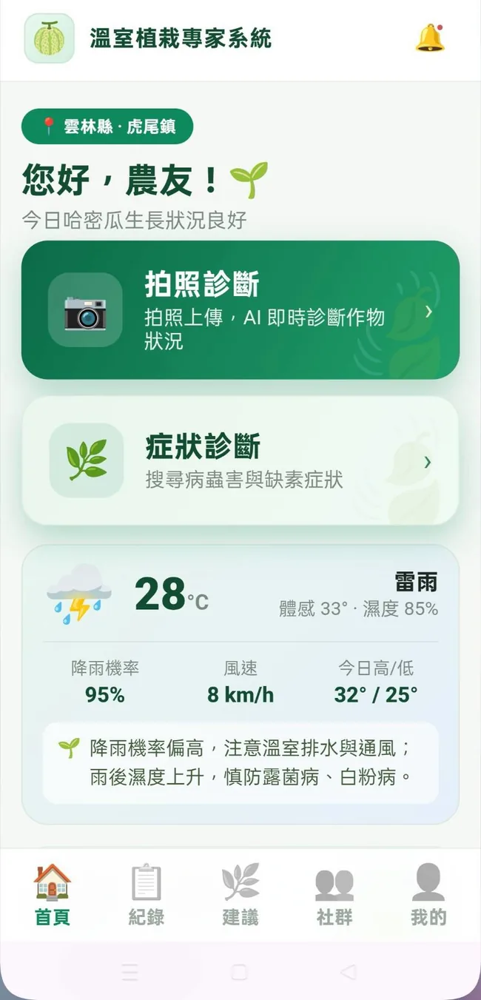

智慧農業專題 · 數位特刊VOL. 02 / 2026
RETRIEVAL · GENERATION · FIELDWORK
讓栽培建議
有據可查。
一份從農業現場出發的研發誌：追蹤團隊如何整理栽培手冊、建立語意索引、設計 RAG 問答流程，最後把複雜技術放進農友能操作的手機介面。
12個專題頁面
277個手冊段落
5類主要作物資料

手機端 PWA 原型問答 · 來源 · 紀錄 · 天氣
麥寮高中 · 結合檢索增強生成的智慧植栽專家系統SCROLL TO READ / 01—12